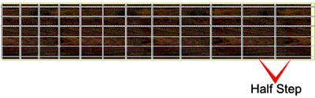

Articles: What Is Music? | What Are Notes? | Sharps And Flats | Half Steps And Whole Steps | What Is A Scale? | The Major Scale | What Is A Key?
Half Steps and Whole Steps
Just like we measure the distance between places in terms of feet or miles, we measure the distance between notes in half steps and whole steps. Half steps could be compared to the inch, in that they are the smallest unit of measure. A half step is the distance from any note to the next closest note. For example the distance from A to A# is a half step, and the distance from E to F is a half step.
On a guitar this distance can be seen by moving from any fret on any string to the very next fret on the same string.
Those of you who are gifted in math have probably guessed that a whole step is equal to two half steps. This assumption is correct.